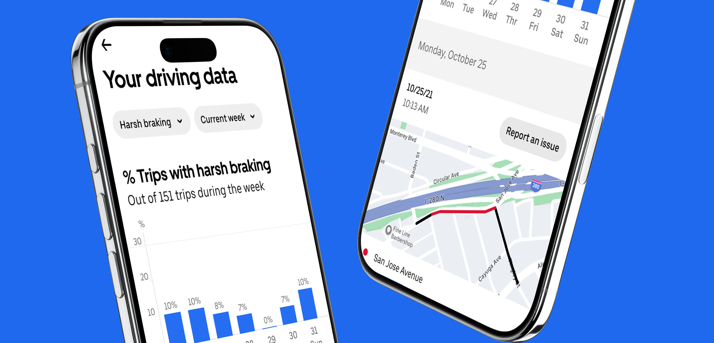
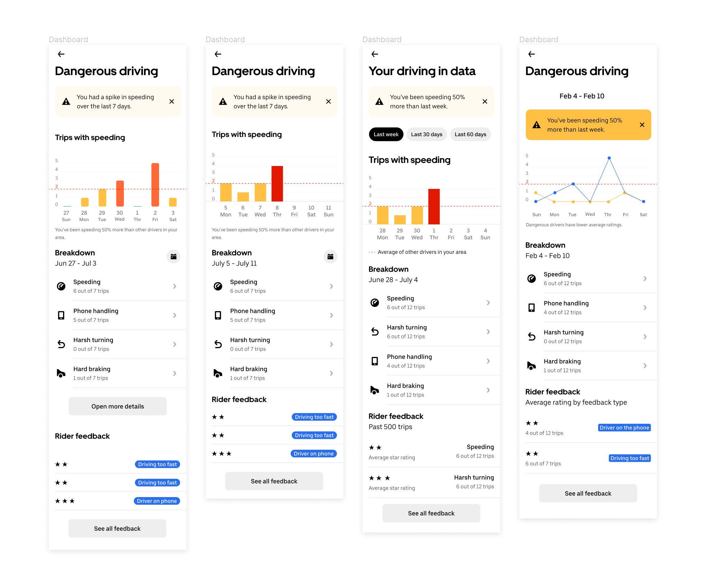
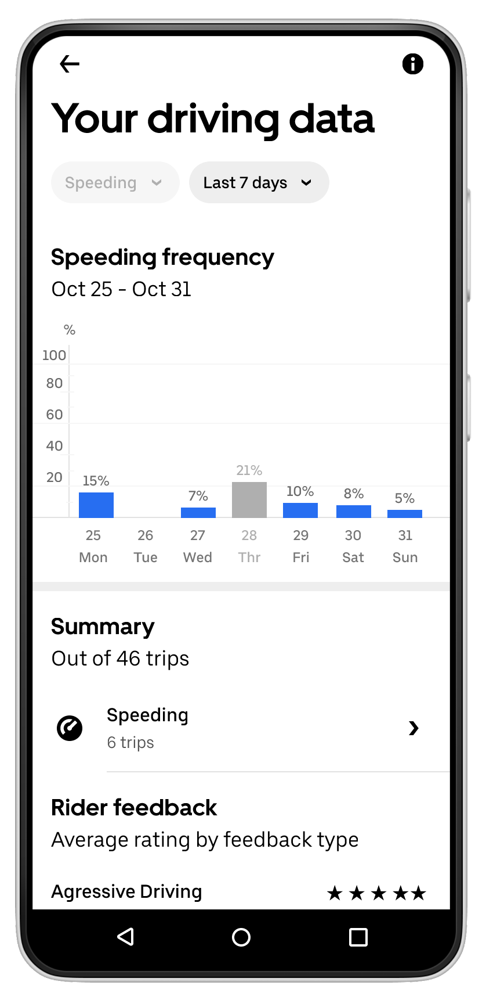
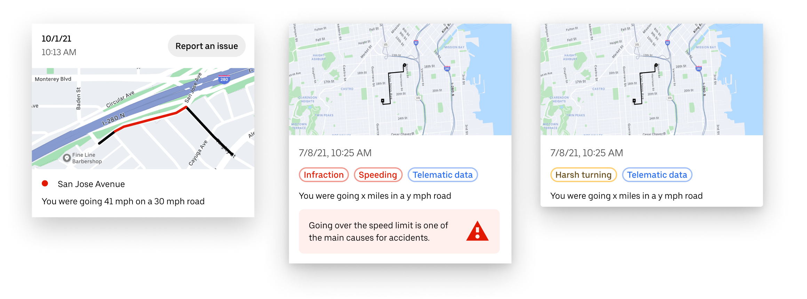
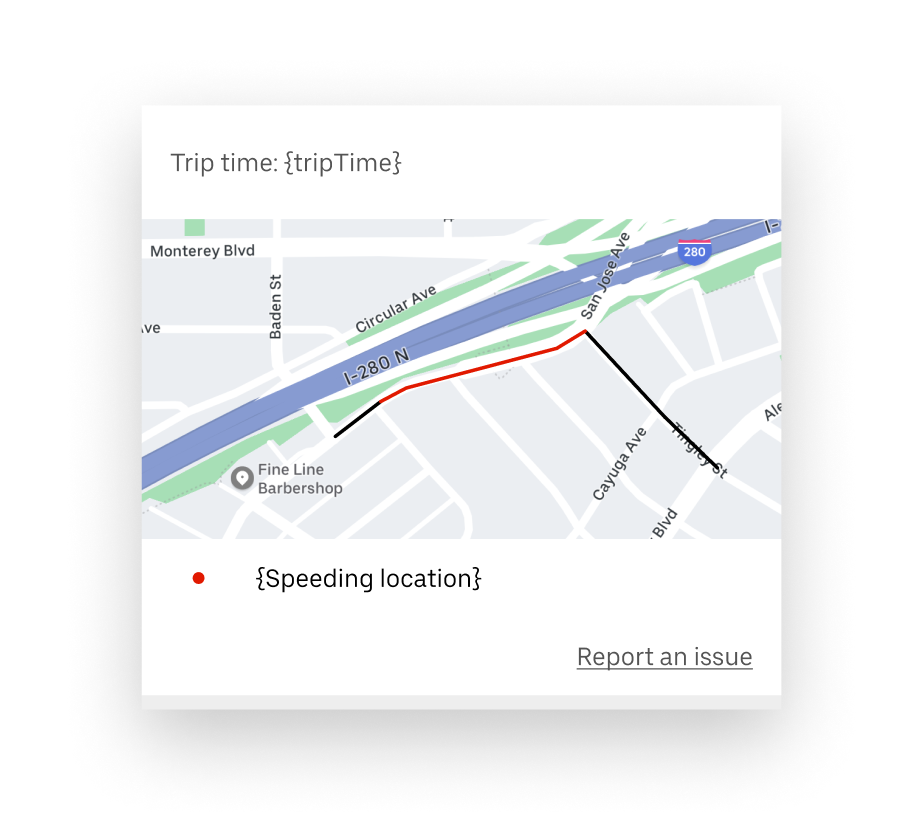

How might we help Uber Drivers understand how often they are speeding and how they can improve

- Role
- Product Designer
- Year
- 2020–2021
- Company
- Uber
A spike in dangerous driving following COVID restrictions drove Uber to give drivers visibility into their own behavior — starting with speeding, with contextual data they could actually act on.
Problem
A spike in dangerous driving behavior after COVID restrictions started to get lifted led to more crashes and more rider reports
Solution
Provide drivers with detailed data and contextual information about when and where they were speeding.
Impact
-7% of speeding on the user cohort testing the experience
This change of behavior was risky for both drivers, riders and other passers-by. Riders started to report driving behavior more often, which in turn led to more deactivations due to dangerous driving.
Problem space
As Covid-19 restrictions started to be lifted in the US, drivers found themselves in a far more intense driving environment. Other drivers on the road were apparently driving worse than before, and Uber drivers also started to speed up, hard braking and harsh turning more than before.
All of that pushed Uber to aid drivers in understanding what is happening, give them visibility of their driving behavior, and properly take action.
Design principles
Quantifiable
The surface should clearly show the behaviors and how many of them happened in a set period of time.
Contextual
Show where and when the behavior happened, with visual support.
Actionable
Drivers want to be able to report behaviors they disagree with.
Solution studies
Considering the design and product requirements and research findings, the team opted for a surface dedicated to aggregate data, from where users could go to the detailed map information of their speeding instances.

Due to the nature of this experience, we decided to not work straight away with all behaviors. Instead, speeding would be used as a starting point for the surface, from where we could learn and iterate the solution.
Dashboard finishing touches
Starting with a single behavior, speeding, we designed a solution that could show the past seven days of behaviors tracked by telematics. For the chart view, we ultimately decided to use the same graph seen in earnings dashboard for the sake of consistency.

Trip segment solution
Starting with a single behavior, speeding, we designed a solution that could show the past seven days of behaviors tracked by telematics. For the chart view, we ultimately decided to use the same graph seen in earnings dashboard for the sake of consistency.

The final trip segment visualization kept the "Report an issue" as a smaller, less prominent link instead of a button. Due to engineering restraints we also had to remove the trip speed information.

My Role
Product Designer, leading the design vision and creating all assets, screens and visuals.